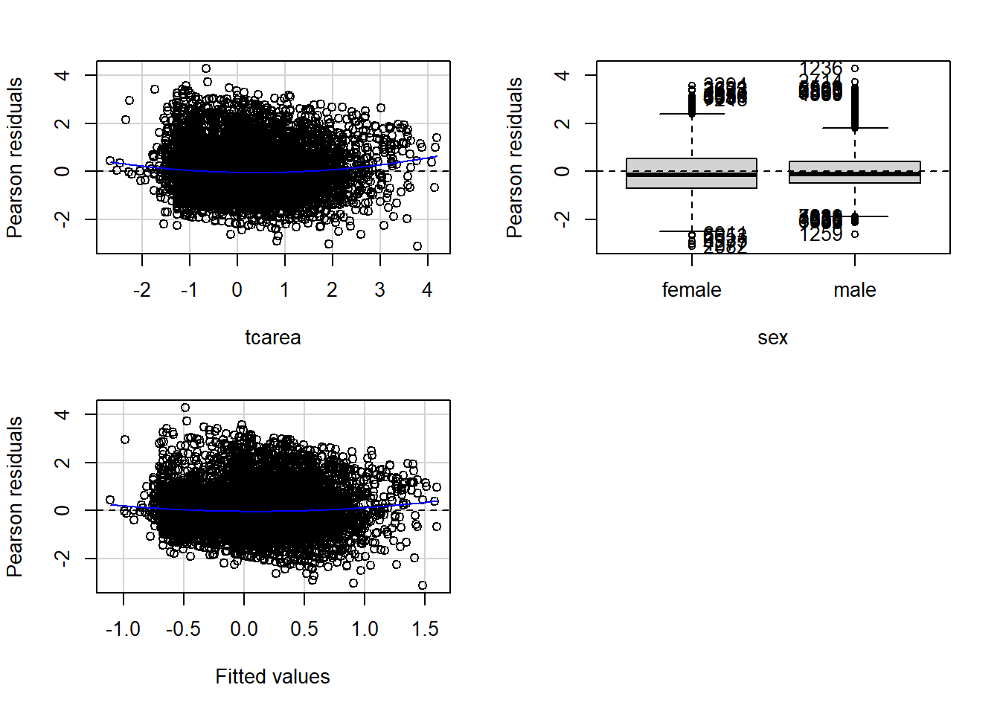
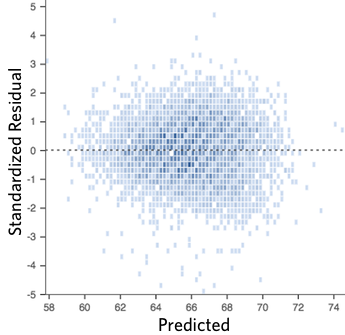
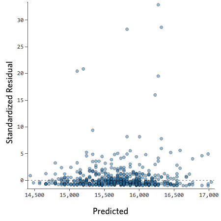
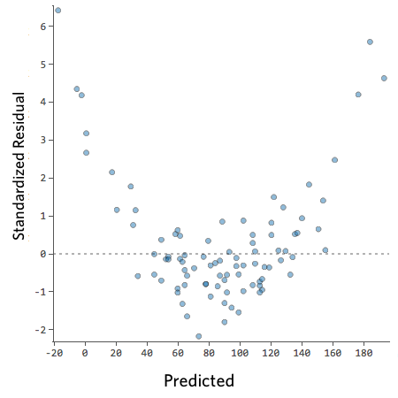
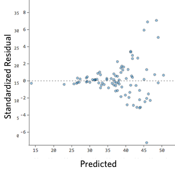
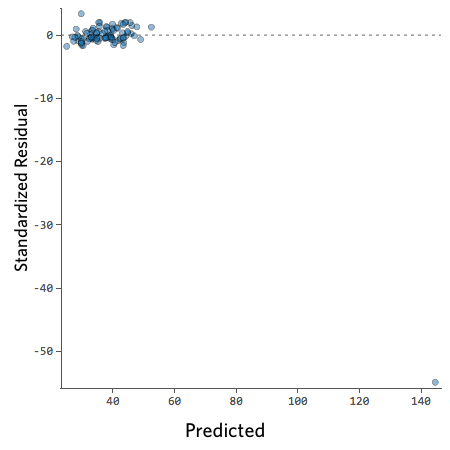
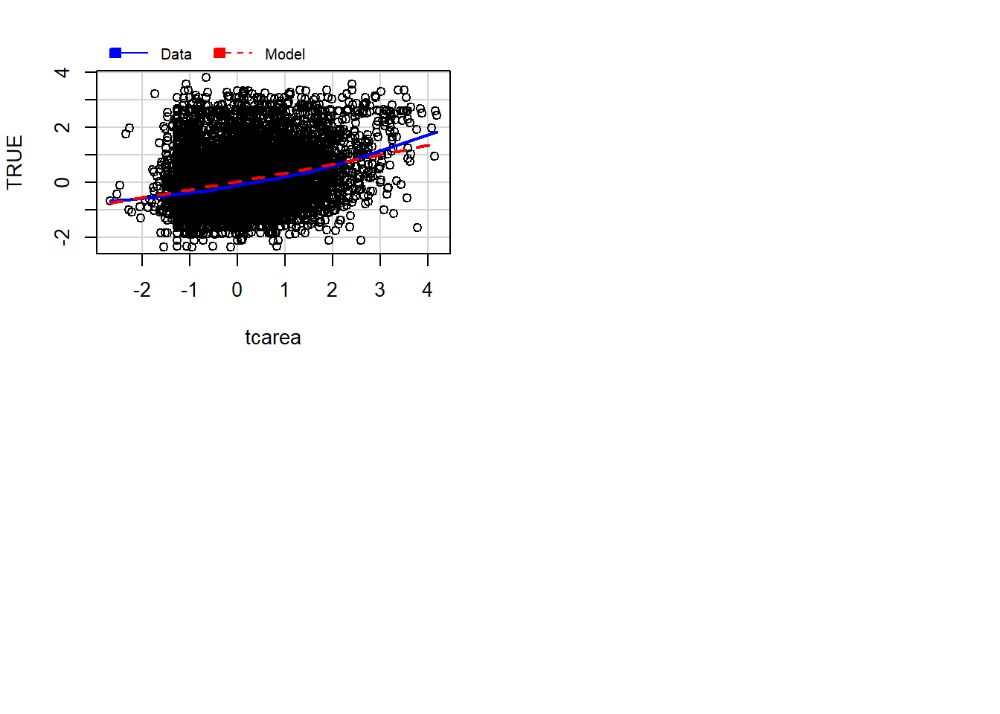
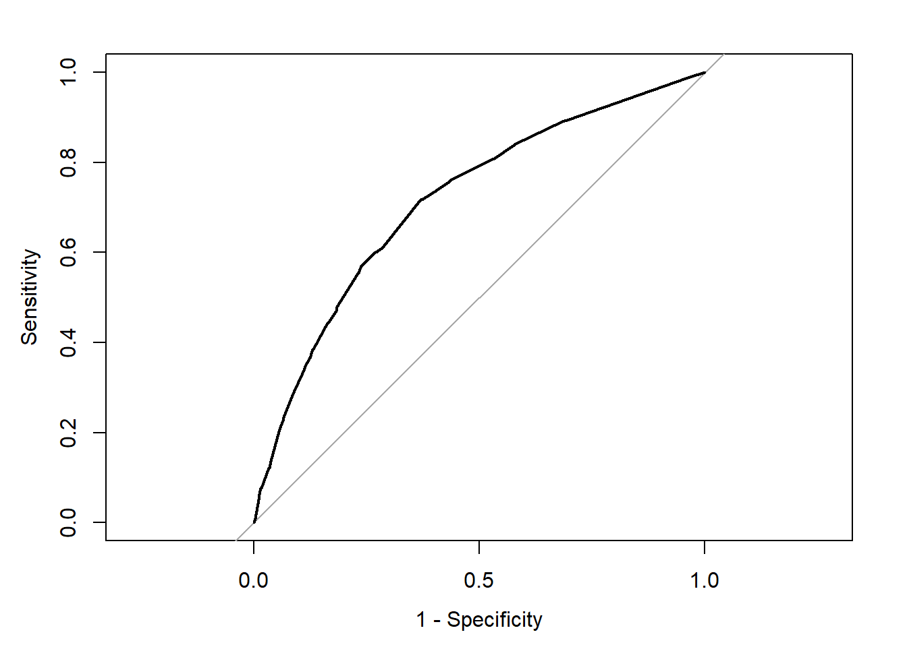

Appendix
Plotting residuals
Many of the assumptions can be tested first by having a look at your residuals. Remember, the residuals are the ‘error’ in your model. In previous weeks, we defined the ordinary residuals as the difference between the observed and the predicted values, the distance between the points in your scatterplot and the regression line. Apart from the ordinary residuals, most software computes other forms of closely related ones: the standardised, the studentised, and the Pearson residuals.
The raw residuals are just the difference between the observed and the predicted, the other three are ways of normalising this measure, so you can compare what is large, what is small, etc. For example, with the standardized residuals, you essentailly calculate z scores, and given a normal distribution of the standardized residuals, the mean is 0, and the standard deviations is 1. Pearson residuas are raw residuals divided by the standard error of the observed value. Studentized resiruals (also called standardized pearson residuals) are raw residuals divided by their standard error. You can read more about these here.
Plotting these residuals versus the fitted values and versus each of the predictors is the most basic way of diagnosing problems with your regression model. However, as Fox and Weisberg (2011) emphasise > this “is useful for revealing problems but less useful for determining the exact nature of the problem” and consequently one needs “other diagnostic graphs to suggest improvements to the model”.
In the previous session we fitted the model tcviolent ~ tcarea + sex. This was our fit_3 model during that session. You may have to run the model again if you do not have it in your global environment.
To obtain the basic residual plots for this model we use the residualPlots() function of the car package.
## Loading required package: carDataBCS0708<-read.csv("https://raw.githubusercontent.com/eonk/dar_book/main/datasets/BCS0708.csv")
fit_3 <- lm(tcviolent ~ tcarea + sex, data=BCS0708)
residualPlots(fit_3)
## Test stat Pr(>|Test stat|)
## tcarea 6.2571 4.123e-10 ***
## sex
## Tukey test 4.6065 4.094e-06 ***
## ---
## Signif. codes: 0 '***' 0.001 '**' 0.01 '*' 0.05 '.' 0.1 ' ' 1This function will produce plots of the Pearson residuals versus each of the predictors in the model and versus the fitted values.
Residuals vs predicted values
The most important of this is the last one, the scatterplot of the Pearson residuals versus the fitted values. In these plots one has to pay particular attention to nonlinear trends, trends in variations across the graph, but also isolated points. Ideally a plot of the residuals should show that:
- they’re pretty symmetrically distributed, tending to cluster towards the middle of the plot
- they’re clustered around the lower single digits of the y-axis (e.g., 0.5 or 1.5, not 30 or 150)
- in general there aren’t clear patterns
For example this is a good looking scatterplot of residuals vs fitted values:

On the other hand, if your plot isn’t evenly distributed vertically, or they have an outlier, or they have a clear shape to them, that indicates you can detect a clear pattern or trend in your residuals. In this case, then your model has room for improvement.
For example, these are scatterplots of residuals vs fitted values that indicate a problem:




How concerned should you be if your model isn’t perfect, if your residuals look a bit unhealthy? It’s up to you. Most of the time a decent model is better than none at all. So take your model, try to improve it, and then decide whether the accuracy is good enough to be useful for your purposes.
Residuals vs predictors
These plots are related to the homogeneity of variance assumption we introduced earlier.
When the predictor is categorical, we will see a collection of boxplots (one for each level in the predictor). A good fit will be indicated by boxplots that have the same centre and similar spread.
When the predictor is numeric, we see a scatterplot of the predictor against the Pearson residuals. Here we also look at any systematic differences in the spread of the residuals across the X axis. When the variances are not unequal you can often see a funnel form shaping up, with less variance at one end of the X axis than the other. Though other systematic patterns are also possible. You also need to pay attention to the shape of the red line printed in the output. This line should be straight. If you observe non-linearities (e.g., a curved line), this may be a more serious issue than the unequal spread and will need addressing.
Diagnostic
When you run the residualPlots() function R will also print two numerical tests.
First we have a curvature test for each of the plots by adding a quadratic term and testing the quadratic to be zero (more on this in a few sections). This is Tukey’s test for nonadditivity when plotting against fitted values. When this test is significant it may indicate a lack of fit for this particular predictor.
The Tukey test optimally should not be significant. We can see in the first of the three plots that the red line is a bit curved. It is this pattern that the printed tests are picking up.
Marginal plots
We can further diagnose the model by printing marginal model plots using the marginalModelPlots() function of the car package.
## Error in plot.window(...): need finite 'xlim' values
This will plot a scatterplot for each predictor variable against the response variable. This displays the conditional distribution of the response given each predictor, ignoring the other predictors. They are called marginal plots because they show the marginal relationship between the outcome and each predictor. It will also print a scatterplot of the response versus the fitted value displaying the conditional distribution of the outcome given the fit of the model. We observe here the curvature that was already identified by the previous plots (notice the blue line).
We can also use the marginalModelPlots() function to assess the homogeneity of variance assumption using the following argument:
## Warning in xy.coords(x, y, xlabel, ylabel, log): NAs introduced by coercion## Warning in min(x): no non-missing arguments to min; returning Inf## Warning in max(x): no non-missing arguments to max; returning -Inf## Error in plot.window(...): need finite 'xlim' valuesThis will print the estimated standard deviation lines to the graph. You would want this to be constant across the X axis.
Diagnostic for homoskedasiticity
And since we are discussing homoskedasiticity (e.g., homogeneity of variance or constant/equal variance), it is worth pointing out that the car package implements a score test that evaluates whether the variance is constant. To obtain this test we use the ncvTest() function.
## Non-constant Variance Score Test
## Variance formula: ~ fitted.values
## Chisquare = 186.8947, Df = 1, p = < 2.22e-16Expected frequencies
Notice that R is telling us that the minimum expected frequency is 41.68. Why? For the Chi-squared test to work, it assumes the cell counts are sufficiently large. Precisely what constitutes ‘sufficiently large’ is a matter of some debate. One rule of thumb is that all expected cell counts should be above 5. If we have small cells, one alternative is to rely on the Fisher’s Exact Test rather than on the Chi-Square. We don’t have to request it here. Our cells are large enough for Chi Square to work fine. But if we needed, we could obtain the Fisher’s Exact Test with the following code:
BCS0708<-read.csv("https://raw.githubusercontent.com/uom-resquant/modelling_book/refs/heads/master/datasets/BCS0708.csv")
library(gmodels)
BCS0708$rubbcomm <- as.factor(BCS0708$rubbcomm)
BCS0708$rubbcomm <- factor(BCS0708$rubbcomm,
levels = c("not at all common",
"not very common", "fairly common",
"very common"))
fisher.test(BCS0708$rubbcomm, BCS0708$bcsvictim, simulate.p.value=TRUE)##
## Fisher's Exact Test for Count Data with simulated p-value (based on
## 2000 replicates)
##
## data: BCS0708$rubbcomm and BCS0708$bcsvictim
## p-value = 0.0004998
## alternative hypothesis: two.sidedThe p-value is still considerably lower than our alpha level of .05. So, we can still conclude that the relationship we observe can be generalised to the population.
Remember that we didn’t need the Fisher test. However, as suggested above, there may be times when you need them.
Logistic regression
Fitting logistic regression: alternative
Another way of fitting a logistic regression and getting the odds ratio with less typing is to use the Logit() function in the lessR package (you will need to install it if you do not have it).
library(effects)
data(Arrests, package="effects")
Arrests$harsher <- relevel(Arrests$released, "Yes")
#Rename the levels so that it is clear we now mean yes to harsher treatment
levels(Arrests$harsher) <- c("No","Yes")
#Check that it matches in reverse the original variable
Arrests$colour <- relevel(Arrests$colour, "White")
library(lessR, quietly= TRUE)
Logit(harsher ~ checks + colour + sex + employed, data=Arrests, brief=TRUE)##
## >>> Note: colour is not a numeric variable.
## Indicator variables are created and analyzed.
##
## >>> Note: sex is not a numeric variable.
## Indicator variables are created and analyzed.
##
## >>> Note: employed is not a numeric variable.
## Indicator variables are created and analyzed.
##
## Response Variable: harsher
## Predictor Variable 1: checks
## Predictor Variable 2: colourBlack
## Predictor Variable 3: sexMale
## Predictor Variable 4: employedYes
##
## Number of cases (rows) of data: 5226
## Number of cases retained for analysis: 5226
##
##
## BASIC ANALYSIS
##
## -- Estimated Model of harsher for the Logit of Reference Group Membership
##
## Estimate Std Err z-value p-value Lower 95% Upper 95%
## (Intercept) -1.9035 0.1600 -11.898 0.000 -2.2170 -1.5899
## checks 0.3580 0.0258 13.875 0.000 0.3074 0.4085
## colourBlack 0.4961 0.0826 6.003 0.000 0.3341 0.6580
## sexMale 0.0422 0.1496 0.282 0.778 -0.2511 0.3355
## employedYes -0.7797 0.0839 -9.298 0.000 -0.9441 -0.6154
##
##
## -- Odds Ratios and Confidence Intervals
##
## Odds Ratio Lower 95% Upper 95%
## (Intercept) 0.1491 0.1089 0.2039
## checks 1.4304 1.3599 1.5046
## colourBlack 1.6423 1.3967 1.9310
## sexMale 1.0431 0.7779 1.3986
## employedYes 0.4585 0.3890 0.5404
##
##
## -- Model Fit
##
## Null deviance: 4776.258 on 5225 degrees of freedom
## Residual deviance: 4330.699 on 5221 degrees of freedom
##
## AIC: 4340.699
##
## Number of iterations to convergence: 5
##
##
## Collinearity
##
## Tolerance VIF
## checks 0.908 1.101
## colourBlack 0.963 1.038
## sexMale 0.982 1.019
## employedYes 0.931 1.074Assessing model fit: deviance and pseudo r squared
As you may remember, when looking at linear models, we could use an F test to check the overall fit of the model, and we could evaluate R squared. When running logistic regression, we cannot obtain the R squared (although there is a collection of pseudo-R^2 measures that have been produced). In linear regression, things are a bit simpler. As Menard (2010: 43) explains:
“there is only one reasonable residual variation criterion for quantitative variables in OLS, the familiar error sum of squares… but there are several possible residual variation criteria (entropy, squared error, qualitative difference) for binary variables. Another hindrance is the existence of numerous mathematical equivalents to R^2 in OLS, which are not necessarily mathematically (same formula) or conceptually (same meaning in the context of the model) equivalent to R^2 in logistic regression… Moreover, in logistic regression, we must choose whether we are more interested in qualitative prediction (whether predicitons are correct or incorrect), quantitative prediction (how close predictions are to being correct), or both, because different measures of explained variation are appropriate for these two different types of prediction”
A common starting point for assessing model fit is to look at the log-likelihood statistic and the deviance (also referred to as -2LL).
The log-likelihood aims to provide a measure of how much-unexplained variation there is after you fit the mode. Large values indicate poor fit.
The deviance, on the other hand, is simply the log-likelihood multiplied by -2 and is generally abbreviated as -2LL. The deviance will be a positive value, and larger values indicate worse prediction of the response variable. It is analogous to the error sum of squares in linear regression. In the same way that OLS linear regression tries to minimise the error sum of squares, maximum likelihood logistic regression tries to minimise the -2LL.
The difference between the -2LL for the model with no predictors and the -2LL for the model with all the predictors is the closer we get in logistic regression to the regression sum of squares. This difference is often called model chi-squared, and it provides a test of the null hypothesis that all the regression coefficients equal zero. It is, thus, equivalent to the F test in OLS regression.
fitl_1 <- glm(harsher ~ checks + colour + sex + employed, data=Arrests, family = "binomial")
summary(fitl_1)##
## Call:
## glm(formula = harsher ~ checks + colour + sex + employed, family = "binomial",
## data = Arrests)
##
## Coefficients:
## Estimate Std. Error z value Pr(>|z|)
## (Intercept) -1.90346 0.15999 -11.898 < 0.0000000000000002 ***
## checks 0.35796 0.02580 13.875 < 0.0000000000000002 ***
## colourBlack 0.49608 0.08264 6.003 0.00000000194 ***
## sexMale 0.04215 0.14965 0.282 0.778
## employedYes -0.77973 0.08386 -9.298 < 0.0000000000000002 ***
## ---
## Signif. codes: 0 '***' 0.001 '**' 0.01 '*' 0.05 '.' 0.1 ' ' 1
##
## (Dispersion parameter for binomial family taken to be 1)
##
## Null deviance: 4776.3 on 5225 degrees of freedom
## Residual deviance: 4330.7 on 5221 degrees of freedom
## AIC: 4340.7
##
## Number of Fisher Scoring iterations: 5In our example, we saw that some measures of fit were printed below the table with the coefficients. The null deviance is the deviance of the model with no predictors, and the residual deviance is simply the deviance of this model. You clearly want the residual deviance to be smaller than the null deviance. The difference between the null and the residual deviance is what we call the model chi-squared. In this case, this is 4776.3 minus 4330.7. We can ask R to do this for us.
First, notice that the object we created has all the information we need already stored.
## [1] "coefficients" "residuals" "fitted.values"
## [4] "effects" "R" "rank"
## [7] "qr" "family" "linear.predictors"
## [10] "deviance" "aic" "null.deviance"
## [13] "iter" "weights" "prior.weights"
## [16] "df.residual" "df.null" "y"
## [19] "converged" "boundary" "model"
## [22] "call" "formula" "terms"
## [25] "data" "offset" "control"
## [28] "method" "contrasts" "xlevels"So we can use this stored information in our calculations.
## [1] 445.5594Is 445.6 small? How much smaller is enough? This value has a chi-square distribution, and its significance can be easily computed. For this computation, we need to know the degrees of freedom for the model (which equal the number of predictors in the model) and can be obtained like this:
## [1] 4Finally, the p-value can be obtained using the following code to invoke the Chi-Square distribution:
#When doing it yourself, this is all you really need
#(we present the code in a separate fashion above so that you understand better what the one here does)
with(fitl_1, pchisq(null.deviance - deviance, df.null - df.residual, lower.tail = FALSE))## [1] 3.961177e-95We can see that the model chi-square is highly significant. Our model as a whole fits significantly better than a model with no predictors.
Menard (2010) recommends also looking at the likelihood ratio R^2, which can be calculated as the difference between the null deviance and the residual deviance divided by the null deviance.
## [1] 0.09328629Some authors refer to this as the Hosmer/Lemeshow R^2. It indicates how much the inclusion of the independent variables in the model reduces variation, as measured by the null deviance. It varies between 0 (when our prediction is catastrophically useless) and 1 (when we predict with total accuracy). There are many other pseudo R^2 measures that have been proposed, but Menard based on research on the properties of various of these measures recommends the likelihood ratio R^2 because:
It is the one with a closer conceptual link to R^2 in OLS regression.
It does not appear to be sensitive to the base rate (the proportion of cases that have the attribute of interest) of the phenomenon being studied and, therefore, will work even in cases with unbalanced probabilities.
It varies between 0 and 1
And it can be used in other generalised linear models (models for categorical outcomes with more than two levels, which we don’t cover here)
Assessing model fit: ROC curves
We may want to see what happens to sensitivity and specificity for different cut-off points. For this, we can look at receiver operating characteristics or simply ROC curves. This is essentially a tool for evaluating the sensitivity/specificity trade-off. The ROC curve can be used to investigate alternate cut-offs for class probabilities.
We can use the pROC package for this. We start by creating an object that contains the relevant information with the roc() function from the pROC package.
fitl_1_prob <- predict(fitl_1, type = "response")
library(pROC)
rocCURVE <- roc(response = Arrests$harsher,
predictor = fitl_1_prob)Once we have the object with the information, we can plot the ROC curve.
plot(rocCURVE, legacy.axes = TRUE) #By default, the x-axis goes backwards; we can use the specified option legacy.axes=TRUE, to get 1-spec on the x-axis moving from 0 to 1.
We can see the trajectory of the curve is at first steep, suggesting that sensitivity increases at a greater pace than the decrease in specificity. However, we then reach a point at which specificity decreases at a greater rate than the sensitivity increases. If you want to select a cut-off that gives you the optimal cut-off point, you can use the coords() function of the pROC package. You can pass arguments to this function so that it returns the best sum of sensitivity and specificity.
alt_cutoff1 <- coords(rocCURVE, x = "best", best.method = "closest.topleft")
#The x argument, in this case, is selecting the best cut-off using the "closest topleft" method
#(which identifies the point closest to the top-left part of the plot with perfect sensitivity or specificity). Another option is to use the "youden" method in the best.method argument.
alt_cutoff1## threshold specificity sensitivity
## 1 0.1696539 0.6305953 0.7163677Here, we can see that with a cut-off point of .16 we get a specificity of .63 and a sensitivity of .71. Notice how this is close to the base rate of harsher treatment in the sample (17% of individuals actually received harsher treatment). For a more informed discussion of cut-off points and costs of errors in applied predictive problems in criminal justice, I recommend reading Berk (2012). Often, the selection of cut-off may be motivated by practical considerations (e.g., selecting individuals for treatment in a situation where resources to do so are limited).
The ROC curve can also be used to develop a quantitative assessment of the model. The perfect model is one where the curve reaches the top left corner of the plot. This would imply 100% sensitivity and specificity. On the other hand, a useless model would be one with a curve alongside the diagonal line splitting the plot in two, from the bottom right corner to the top right corner. You can also look at the area under the curve (AUC) and use it to compare models. An AUC of .5 corresponds to the situation where our predictors have no predictive utility. For a fuller discussion of how to compare these curves and the AUC, I recommend reading Chapter 11 of Kuhn and Johnson (2014).